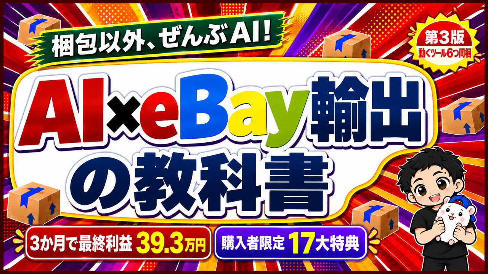

eBayの店をAIで回そうとすると、最初はチャットでAIに聞くところから始まります。
英語の返信も、値段の考え方も、聞けばすぐに答えてくれます。
でも、聞くたびに答えが変わる間は、店は回りません。
結論から言うと、店が回り始めるのは、同じ仕事を毎日同じ形で動かす「ツール」になってからです。
『AI × eBay輸出の教科書 — 梱包以外、ぜんぶAI』を、10月22日に、この部分を足した第3版にしました🐹
この記事で分かることは3つです。
・第3版で、何が変わったか
・増えた6つのツールで、何ができるか
・もう買った人の受け取り方と、これからの値段
何が変わったか: 読む教科書から、動かす教科書へ
第2版までは、「こう作ればいい」を読んで、自分のAIに作らせる教科書でした。
第3版では、それに加えて、動くツールそのものを6つ同梱しました。
ZIPを落として、Claude Codeに「このスキルを入れて、動くか確かめて」と頼むと、あなたのパソコンで動き始めます。
どのツールにも架空の店の手本がついているので、eBayにつながなくても、お金をかけずに画面を確かめられます。
あわせて、顧客対応の章(第8章)を「買い手への返信を、人が見ずにAIが返す形」に書き直し、ほかの章も、いまの店の回し方に合わせて直しました。
増えた6つのツール
ツールにする仕事は、3つの条件で選んでいます。
・毎日くり返す
・まちがえたときの損が大きい
・人が忘れやすい
6つとも、この3つに当てはまる仕事です。
それぞれに、ツールを入れなくても使える「考え方」を1行ずつ書きます。
第3版で増えた6つのツール
1. 顧客対応のツール(買い手への返信)
英語のメッセージの和訳→仕分け→返信→送る直前の点検まで、AIが進めます。
考え方: 返信を任せるときは、「必ず自分が返すもの」(トラブル・写真や実測の依頼・お金の約束)を先に決める。AIでも外注さんでも同じです。
来るメッセージは3種類。決まった種類だけ人に回す
本音も書きます。
例えば、ぼくの店では、買い手の個人情報をAIに渡さない形にして、eBayの規約との向き合い方を自分で決めたうえで、返信をAIに任せています。
どこまで任せるかは、ご自身の責任で決めてください。任せたくない人は、英訳だけさせる使い方もできます。
2. ストアドクター
注文・返金・表示・閲覧の数字から、「目標まであといくら足りないか」「その差はどこから来ているか」を1枚の診断書にします。
考え方: 売上が足りない月は、件数・1個あたりの利益・返金・経費のどれが足りないかを先に分ける。打つ手がまったく変わります。
3. AI化コーチ
店の作業を9つに書き出し、「AIが自動」「AIが下書き」「人に頼む」「自分でやる」に仕分けて、次にAIに任せる3つを決めます。
考え方: 何を任せるかは、作業を全部書き出してからでないと決められない。
4. 発送まるごとアプリ
梱包発送をお願いしている人のスマホに受注が届き、ボタンを押していくだけで発送まで進みます。報酬も月末に自動で計算されます。
考え方: 人にお願いするときに困るのは、作業より「いま何をやればいいか」が伝わらないこと。順番を1本の流れにする。
5. 仕入先キット
フリマ・オークション・中古店などの仕入先を、同じ形で1つずつ足していけます。
考え方: 仕入先ごとにやり方を変えず、「新着→判定→出品→見回り」の同じ形にそろえると、何か所に増えても回る。
仕入元の規約は、ご自身の責任で確かめてください。
6. API健康診断
AIとeBayをつなぐ仕組みが動いているかを、1コマンドで点検して1枚にまとめます。
考え方: 期限・残りの回数・残りの枠は、切れてからではなく、切れる前に見る。
もう買った人の受け取り方と、これからの値段
もう買ってくださった方は、第3版も6つのツールも無料です。
教科書は、いつもの受け取りページを開き直すだけで第3版になります。
ツールは、同じ受け取りページの「第3版ツール箱」からZIPでダウンロードできます。
(noteやBrainで買った方は、教科書の中の受け取りの案内からどうぞ)
これから買う方の値段は、3部売れるごとに2,000円ずつ上がり、公式サイトは39,800円で止まります。
いまの価格は28,800円(公式サイト)。あと2部売れると30,800円に上がります(10月24日時点)。
向かない人
Claude Codeを使っていない人には向きません。ツールは全部、あなたのパソコンで動くスキルとコードだからです。
完成品を借りて終わりにしたい人にも向きません。手元で動かして、自分の店に合わせて作りかえる前提です。
まとめ
・第3版は、読む教科書に、動くツールを6つ足した版
・ツールにする仕事は「毎日くり返す・まちがえると損が大きい・忘れやすい」の3つで選ぶ
・もう買った人は、受け取りページを開き直すだけで全部届く
ツールを入れない人も、6つの「考え方」は、明日から手作業のままで使えます。
まずは「これは自分が返す」と決めておく返信を、3つ書き出すところからどうぞ🐹
▼中の人🏠(レンタルスペース23部屋・売上1.5億)のレンスペ実録

▼ブログ(eBay×レンスペ、全記事まとめ)

▼この店のやり方は、ぜんぶ1冊にまとめてあります
リサーチ・出品・値付け・顧客対応まで、初月利益10万4,286円を出した実店舗の記録と手順を全部書いた教科書です。
読んだその日から、AI社員の作り方をそのまま真似できます。
『AI × eBay輸出の教科書 — 梱包以外、ぜんぶAI』


🎁 2026年10月22日に第3版になりました。顧客対応 完全自動化ツール・ストアドクター・AI自動化コーチなど付録6つは、これまでに買った人も含めて購入者全員に無料で受け取れます。
内容・最新価格は販売ページをご確認ください。